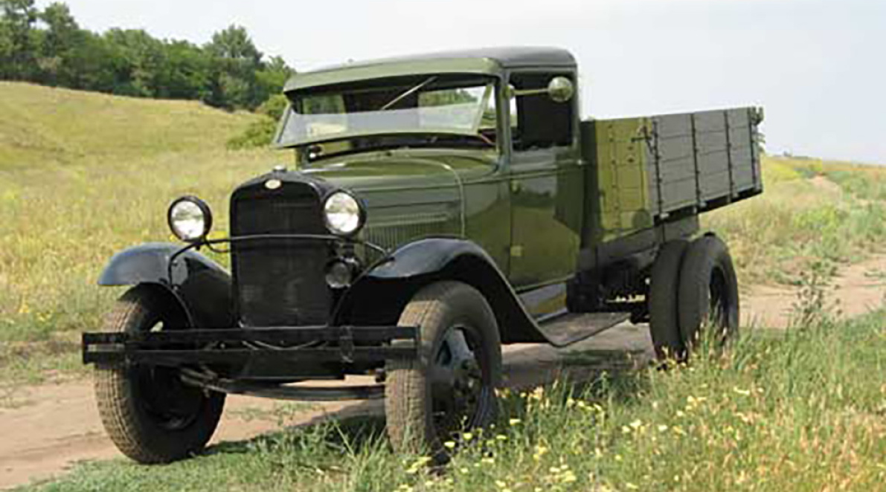

До ВОВ
Германия
После Первой мировой войны побежденная Германия погрузилась в глубокий экономический кризис. В обществе все чаще начали высказываться идеи за возрождение «Великой Германии». 18 сентября 1927 г. президент Германии фельдмаршал П. фон Гинденбург заявил, что его страна снимает с себя всякую ответственность за развязывание Первой мировой войны и не признает основные статьи Версальского договора.
В 1929 г. экономический кризис в Германии усилился, и именно тогда наиболее популярной в стране становится Национал-социалистическая немецкая рабочая партия (НСДАП). 14 сентября 1930 г. ее члены одержали решительную победу на выборах в рейхстаг (германский парламент). С этого момента идеи национал-социализма, сформулированные лидером партии А. Гитлером в книге «Моя борьба», стали основными во внешней политике Германии. 17 ноября 1932 г. на фоне усиливающихся беспорядков и нестабильности в стране в отставку ушел канцлер Германии Ф. фон Папен. Через неделю после этого события престарелый президент Гинденбург предложил пост канцлера Гитлеру.
Из-за ограничений Версальского договора на постройку военных самолетов подготовка немецких летчиков проходила на планерах
Договор, завершивший Первую мировую войну
28 июня 1919 г. в 3 часа дня в Зеркальном зале Версальского дворца собрались главы государств,президенты, главы правительств, послы, министры и маршалы двадцати шести стран. В этот же день состоялось подписание Версальского мирного договора с Германией, официально завершившего Первую мировую войну. Отдельными статьями договора существенно ограничивалась военная мощь Германии. В частности, Германии запрещалось иметь многие современные виды вооружения, например боевую авиацию и бронетехнику.
Создание армии
9 марта 1935 г. министр пропаганды П. Геббельс от лица правительства Германии объявил, что отныне его страна не признает военных постановлений Версальского договора и вместо 100-тысячного добровольного рейхсвера создает 36-дивизионный вермахт, формируемый на основе всеобщей воинской повинности.

Танки на параде в 1935 г., посвященном Эрнтеданкфесту — национальному празднику урожая. Создание бронетанковых войск в Германии являлось грубейшим нарушением положений Версальского договора
Начало Войны
Нападение 3 Рейха на СССР (22 июня 1941 г.)
В 00 ч 30 мин 22 июня 1941 г. наркомат обороны Советского Союза издал директиву №1 о приведении в боевую готовность частей Красной армии. Несмотря на многочисленные заявления немецких перебежчиков и данные советской разведки о том, что утром этого дня германские войска перейдут границу, в директиве лишь говорилось о возможном внезапном нападении немецких войск 22—23 июня на войска советских западных округов. При этом подчеркивалось: «На провокацию не поддаваться и огня не открывать!»
Численность германских и советских сил, приводимая в различных исторических источниках, сильно отличается. Тем не менее, с определенной точностью можно сказать, что к 22 июня 1941 г. в районах стратегического развертывания Германией было сосредоточено от 150 до 160 дивизий, из которых до 20 были танковыми и до 18 моторизованными. Эти силы были развернуты в три стратегические группировки войск «Север», «Центр» и «Юг».
Германские войска напали без объявления войны. Большая часть наших самолетов была сожжена прямо на аэродромах
Обращение к советскому народу
22 июня 1941 г. по радио прозвучало историческое выступление народного комиссара иностранных дел СССР, заместителя председателя Совнаркома СССР, члена Политбюро ЦК ВКП(б) В. Молотова, было призвано воодушевить советских граждан на борьбу с агрессором: «Сегодня, в 4 часа утра... без объявления войны, германские войска напали на нашу страну... Это неслыханное нападение на нашу страну является беспримерным в истории цивилизованных народов вероломством... Наше дело правое. Враг будет разбит. Победа будет за нами!». Слова, завершающие выступление Молотова, стали крылатыми и в дальнейшем неоднократно использовались в средствах массовой информации и в агитационно-пропагандистских материалах с целью воодушевить народ и армию на борьбу с агрессором.
Историческая речь В. Молотова была напечатана во всех газетах Советского Союза
Они первыми встретили врага
От солдат других родов войск советские пограничники отличались зеленым цветом фуражек и петлиц. Эта традиция сохранилась и в наши дни. В принципе, пограничные войска не предназначены для ведения войсковых операций, ведь их главная задача — задерживать нарушителей государственной границы. Поэтому на вооружении этих войск обычно не состоят тяжелая бронетехника и авиация. Тем не менее, именно советские пограничники первыми мужественно встретили немецкие войска и сумели задержать их у границ, дав основным силам Красной армии подготовиться к обороне.
Блокада Ленинграда
Захват Ленинграда — «северной столицы Советского Союза» — А. Гитлер рассматривал как важнейшую цель общего наступления немецких войск в СССР. Ставя перед командующим группой армий «Север» генерал-фельдмаршалом В. фон Леебом цель овладения городом, немецкое командование подчеркивало, что считает это «неотложной задачей». Сосредоточив в направлении удара германскую группу армий «Север» и две финские армии — «Юго-Восточную» и «Карельскую», А. Гитлер утверждал, что «через три недели мы будем в Петербурге».
Новобранцы Красной армии направляются на защиту подступов к Ленинграду. Лето 1941 г.
Падение Новгорода
8 августа 1941 г. немцы начали новое наступление. Стремительным ударом танковых частей они прорвали оборону советских войск, организованную на реке Луга. Несмотря на ожесточенное сопротивление советских воинов, 16 августа немецкие танки вошли в город Кингисепп и перерезали железную дорогу, соединяющую Таллин и Ленинград. Развивая наступление, они к 21 августа вышли к городу Красногвардейску. Оказавшись в 40—50 км от Ленинграда, немецкие войска были остановлены на позициях Красногвардейского укрепрайона. Западнее, на ораниенбаумском направлении немецкое наступление было остановлено в районе города Копорье. На лужском направлении воины Лужской оперативной группы остановили немцев на рубеже своей обороны. Однако восточней их позиций войска 16-й немецкой армии нанесли удар в направлении на Новгород, смяли оборону советских войск и 16 августа захватили западную часть города. 20 августа Новгород пал, и части Северного фронта продолжили отступление к Ленинграду.
Создание Ленинградского фронта
Положение на фронтах, создавшееся в конце августа 1941 г., представляло реальную угрозу окружения Ленинграда. В этих условиях 23 августа Ставка на основе войск Северного фронта создала Ленинградский фронт, которому поручила непосредственную оборону города. Реорганизация войск и кадровые перестановки не сильно сказались на обороноспособности советских войск. Незначительное количество резервов, выделенных Ставкой, не позволило войскам Ленинградского фронта остановить немецкое наступление на юге и финское на севере. 25 августа немецкие части захватили город Любань и, нанеся удар в восточном направлении (на Городище), 30 августа перерезали обе железные дороги, связывающие Ленинград с центром страны. Западнее немецкие войска вышли к станции Мга и, продолжив движение, 8 сентября овладели городом Шлиссельбург. Таким образом, немецкому командованию удалось закончить окружение города по суше. С этого момента снабжение жителей осажденного города и войск Ленинградского фронта осуществлялось только через Ладожское озеро и по воздуху.
Сооружение оборонительного кольца
Уже в конце июня 1941 г. на подступах к Ленинграду развернулось строительство различного вида оборонительных сооружений. Непосредственно вокруг города была создана мощная система обороны, состоявшая из нескольких поясов. На южном направлении были построены Красногвардейский и Слуцко-Кол пинский укрепрайоны, а для защиты города с севера — Карельский укрепрайон. Пояс оборонительных сооружений возводился также по линии Петергоф—Пулково. Наряду с внешней создавалась и внутренняя оборона Ленинграда.

Возведение оборонительных укреплений. Июль 1941 г.
Ленинградские блокадники
Вместе с жителями пригородных районов в блокадном кольце оказалось 2 млн 887 тыс. человек, из которых около 400 тыс. детей. Для них наступили тяжелые дни почти 900-дневной блокады, сопровождающиеся голодом и непрекращающимися обстрелами и бомбежками. Подсчитано, что за период битвы за город по его кварталам было выпущено около 150 тыс. снарядов и сброшено более 100 тыс. бомб. На каждый квадратный километр площади Ленинграда в среднем приходилось 16 фугасных, свыше 320 зажигательных бомб и 480 артиллерийских снарядов. За дни блокады под обстрелами погибло около 16,5 тыс. жителей города, еще до 35 тыс. получили ранения. Но более страшным оружием против жителей непокорившегося города стал голод — более 1 млн жизней унес он.
Зимой 1941—1942 гг. в городе не осталось продуктов, магазины не работали, по карточкам выдавали только хлеб. В сутки солдаты на передовой получали 500 г хлеба, рабочие — 250 г, служащие и иждивенцы (дети, старики, инвалиды) — 125 г. Один ломоть — 125 г., который мы отрезаем себе к тарелке супа, — это была суточная еда блокадников! Блокадный хлеб лишь наполовину состоял из муки, остальное — жмых, отруби, кора, опилки.
Люди падали от голода на улицах, замерзали насмерть в страшные морозы блокадной зимы, гибли от бомбёжек. И всё же ленинградцы трудились, сутками напролёт собирая технику и боеприпасы для фронта на заводах, ухаживая за ранеными в госпиталях, обезвреживая зажигательные бомбы. Поднимая моральный дух блокадников, работали театры и концертные залы.
Ставка поддерживала постоянную связь с Ленинградским фронтом, туда регулярно летали командующие, на месте оценивая обстановку и корректируя военные планы. Страна поддерживала Ленинград.
Продукты по карточкам
18 июля 1941 г. в соответствии с решением советского правительства в Ленинграде была введена карточная система, что позволило упорядочить снабжение населения. В июле и августе 1941 г. рабочие получали по карточкам 800 г хлеба в день, служащие — 800 г, иждивенцы и дети — по 400 г. Примерно в соответствии с таким же принципом были определены ежемесячные нормы выдачи и остальных видов продовольствия: крупы, мяса и мясопродуктов, жиров и кондитерских изделий. Однако уже с 1 октября 1941 г. рабочим и инженерно-техническим работникам стали выдавать по 400 г хлеба, а остальным категориям населения — по 200 г в день.

Хлебная карточка блокадника на Январь 1942 г.
Легендарная «Дорога жизни»
«Дорога жизни» являлась единственной транспортной магистралью через Ладожское озеро в блокадный Ленинград. В периоды навигации она проходила по воде, а зимой — по льду. Благодаря такой «трассе» удалось наладить подвоз в блокадный город боеприпасов, вооружения, продовольствия, медикаментов, топлива и эвакуировать из Ленинграда больных, раненых и нетрудоспособных. Только за период с ноября 1941 г. по апрель 1942 г. из города на «Большую землю» было вывезено более 500 тыс. человек. Работа трассы не прекращалась ни на один день, несмотря на бомбежки, обстрелы и плохую погоду. Это позволило несколько улучшить снабжение людей продуктами питания и, начиная с 25 декабря 1941 г., увеличить хлебный паек до 200—350 г. А с 24 января 1942 г. ленинградцы стали получать 400 г хлеба на рабочую карточку, 300 г — для служащих и 250 г — по детской и иждивенческой карточкам.

Грузовик ГАЗ-АА, более известный как «полуторка» (грузоподъемность 1,5 т) стал основным автомобилем на перевозках по «Дороге жизни»
Освобождение Ленинграда
В январе 1944 г. войска Ленинградского фронта осуществили операцию «Январский гром». Сходящимися ударами от Ораниенбаума к Петергофу и от Ленинграда к Ропше была окружена одна из группировок ГА «Север». Линия фронта объединилась 19 января, и 27 января блокада была снята.
В то же время войска Волховского фронта освободили Новгород. Объединёнными усилиями Ленинградского и Волховского фронтов к марту 1944 г. были почти полностью освобождены Ленинградская и Новгородская области.
Военные хитрости
«5 признаков, что перед нами шпион»: методы красноармейцев по вычислению лазутчиков
Шпионов немцы начали забрасывать на территорию СССР в самом начале Великой Отечественной войны. Им противодействовала мощная советская контрразведка, а ближе к фронту красноармейцы уже по собственному опыту научились вычислять диверсантов. В рядах Красной Армии ходила даже своего рода негласная памятка: по 5 главным признакам солдаты понимали, что перед ними вражеский лазутчик.
1 признак
Немцев выдавали мелочи. Жестикуляция в первую очередь: в этой стране если нужно отсчитать «три» на пальцах люди начнут считать с большого пальца. Русские считают с указательного.

2 признак
На начальном этапе войны лазутчиков вычисляли по скрепкам на документах. Сами документы немцы делали точными копиями оригиналов. В СССР для скрепок брали обычную сталь, она ржавела и оставляла характерные следы. Немецкие документы были просто без ржавчины, скрепки они делали из нержавейки.
3 признак
Выдавали диверсантов и вещи. У большинства набор включал медикаменты, полный комплект одежды, определенный запас еды на несколько суток. Все это выглядело стандартным, в то время как беженцы брали с собой весьма разнородный скарб.
4 признак
Еще одна мелкая деталь также скрывалась в документах. Заготавливали бумаги штабные работники, которые иногда использовали внешне похожие на кириллицу буквы латинского алфавита. В деталях отличия были очевидны.
5 признак
Сдавал лазутчиков и обычный табак. Разведка Германии выдавала лазутчикам папиросы, которые были в ходу везде. Но Красная Армия, столкнувшаяся с беспрецедентным нападением в начале войны таких запасов не имела — младший комсостав и пехота курили махорку, папиросы получали лишь старшие офицеры.
Завершение Второй мировой войны
8 августа 1945 г. СССР вступил в войну против Японии. Под общим руководством маршала А. Василевского советские войска Забайкальского, 1-го и 2-го Дальневосточных фронтов нанесли ряд серьёзных поражений Квантунской армии, освободив Северо-Восточный Китай и Северную Корею. 2 сентября 1945 г. состоялось подписание акта о безоговорочной капитуляции Японии. Вторая мировая война завершилась. Основной итог войны состоял в разгроме государств агрессивного блока во главе с нацистской Германией и ликвидации угрозы истребления русского и других народов Советского Союза. Возрос авторитет и влияние СССР в мире. В результате войны погибло свыше 60 млн человек, в том числе 27 млн советских граждан.
Основные сражения Великой Отечественной войны
Оборона Заполярья (29 июня 1941 г. — 1 ноября 1944 г.).
Битва за Москву (30 сентября 1941 г. — 20 апреля 1942 г.).
Блокада Ленинграда (8 сентября 1941 г. — 27 января 1944 г.).
Ржевская битва (8 января 1942 г. — 31 марта 1943 г.).
Сталинградская битва (17 июля 1942 г. — 2 февраля 1943 г.).
Битва за Кавказ (25 июля 1942 г. — 9 октября 1943 г.).
Курская битва (5 июля — 23 августа 1943 г.).
Битва за Правобережную Украину (24 декабря 1943 г. — 17 апреля 1944 г.).
Белорусская операция (23 июня — 29 августа 1944 г.).
Прибалтийская операция (14 сентября — 24 ноября 1944 г.).
Будапештская операция (29 октября 1944 г. — 13 февраля 1945 г.)
Висло-Одерская операция (12 января —3 февраля 1945 г.).
Восточно-Прусская операция (13 января — 25 апреля 1945 г.).
Битва за Берлин (16 апреля — 8 мая 1945 г.).